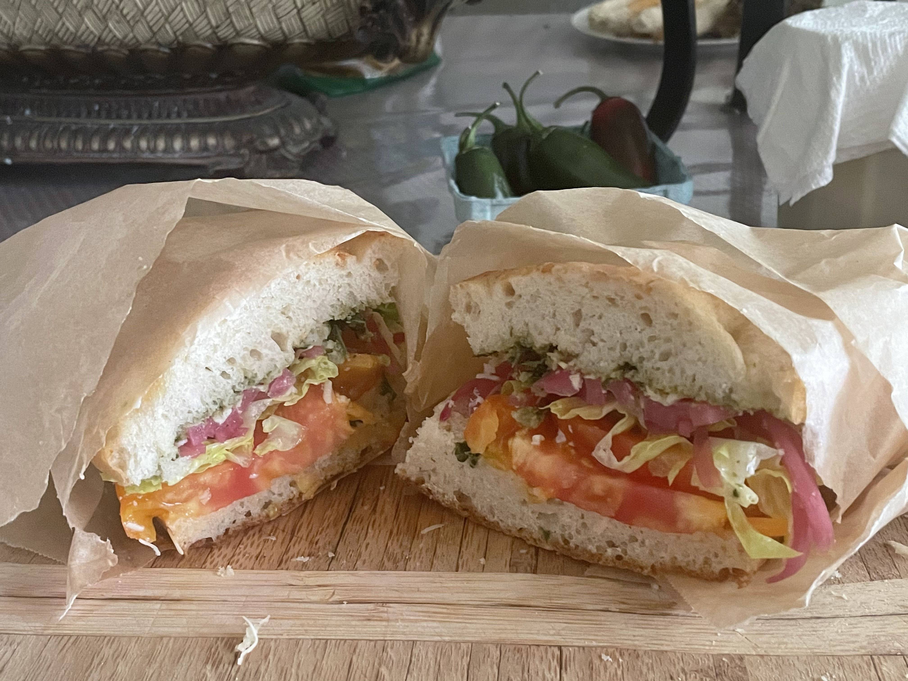
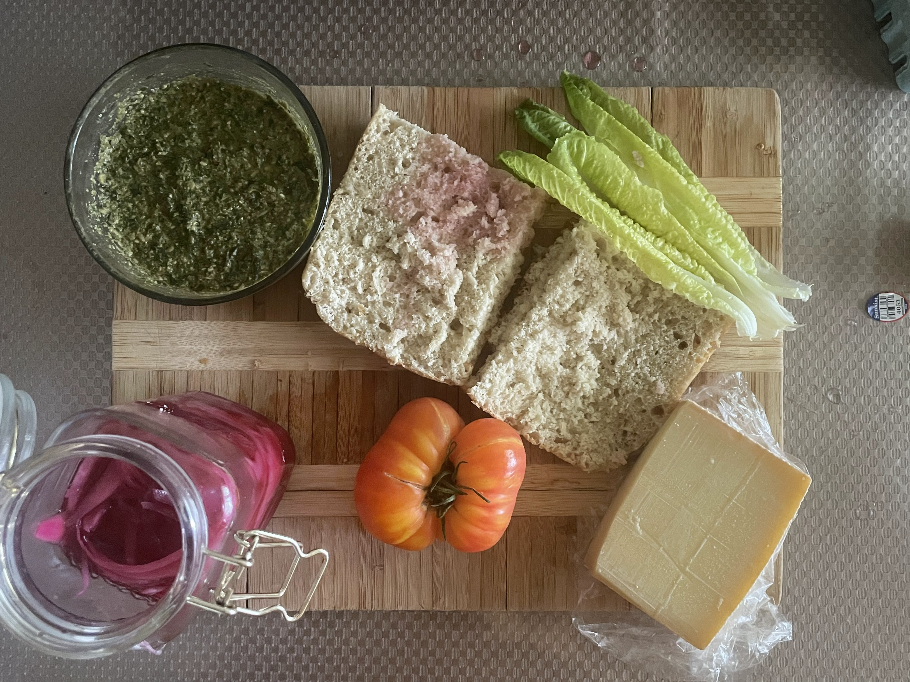
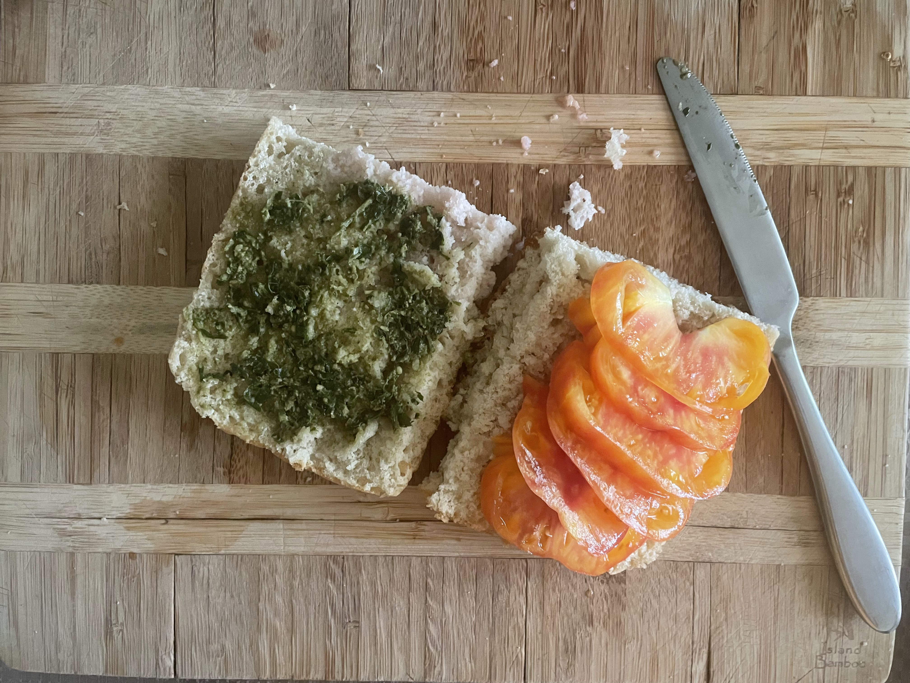
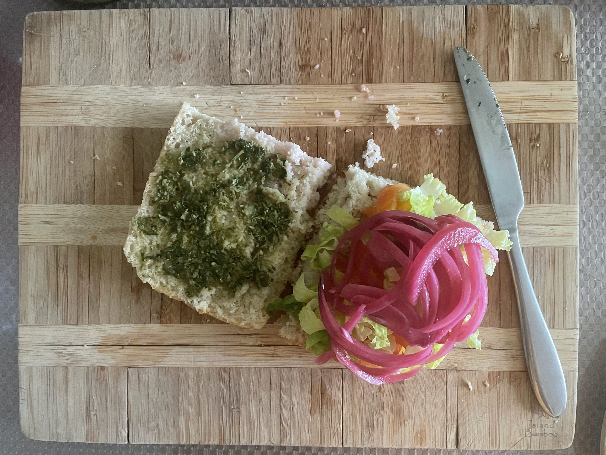
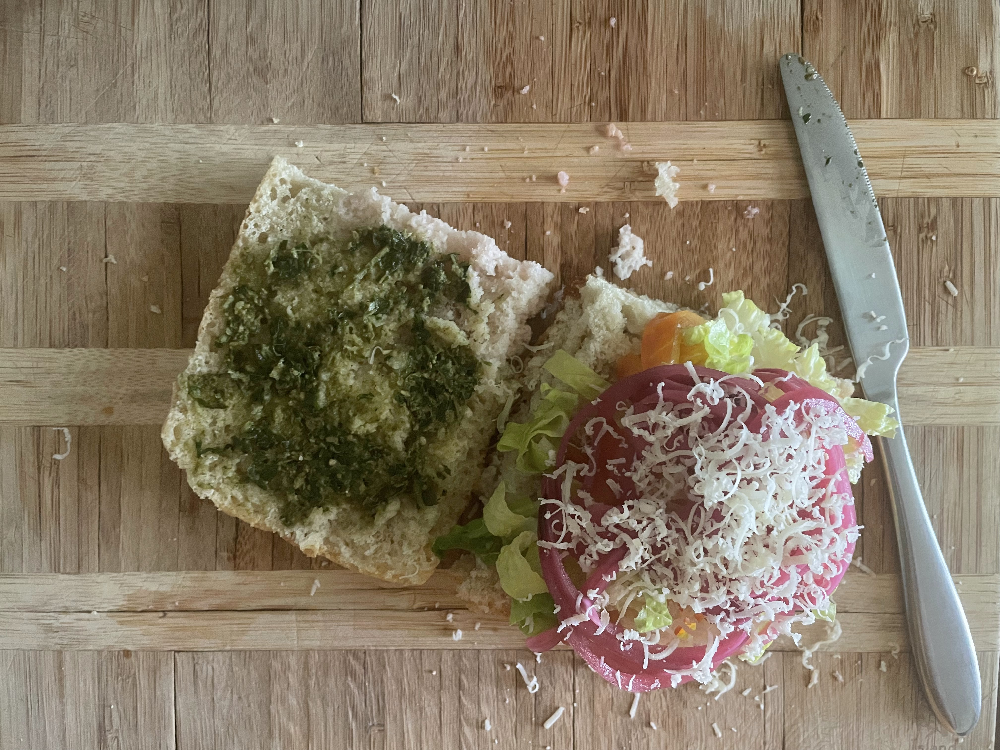
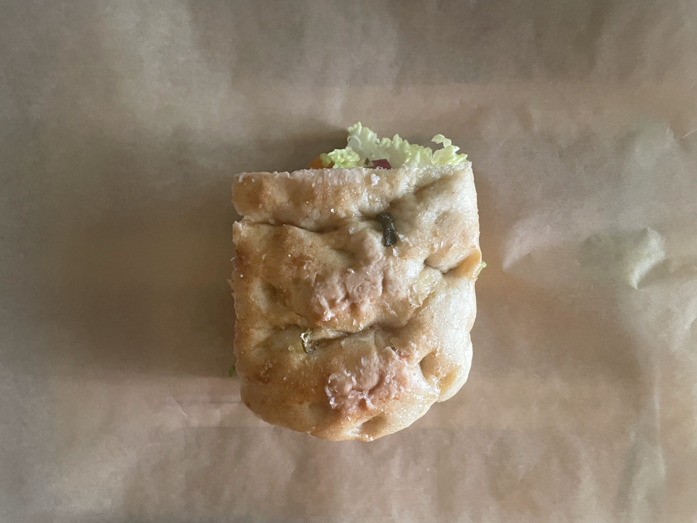

Ruben Uriel Gutierrez
Veggie sandwhich

Required Ingriedients
- Lettuce
- Heirloom tomato
- Pickled onions
- salt
- pesto
- 1 clove of garlic
- Bread
- Cheese

Step 1
If you have flat bread and not foccacia, toast on a skillet with oil till golden brown, then grate garlic into the brown side of the bread.
Step 2
Flip bread lighter side facing up, and apply pesto to the top half.

Step 3
Slice tomatoes diagonally and then cut into half circles, then salt.
Step 4
Cut some lettuce and add it on top of the tomatoes. *I forgot to take a photo
Step 5
Place pickled onions on top of the lettuce
Step 6
Grate cheese of choice on top of the onions.
Step 7
Place the top half on top of the sandwhich and wrap in parchment paper till it covers the whole sandwhich, cut in half and enjoy.
